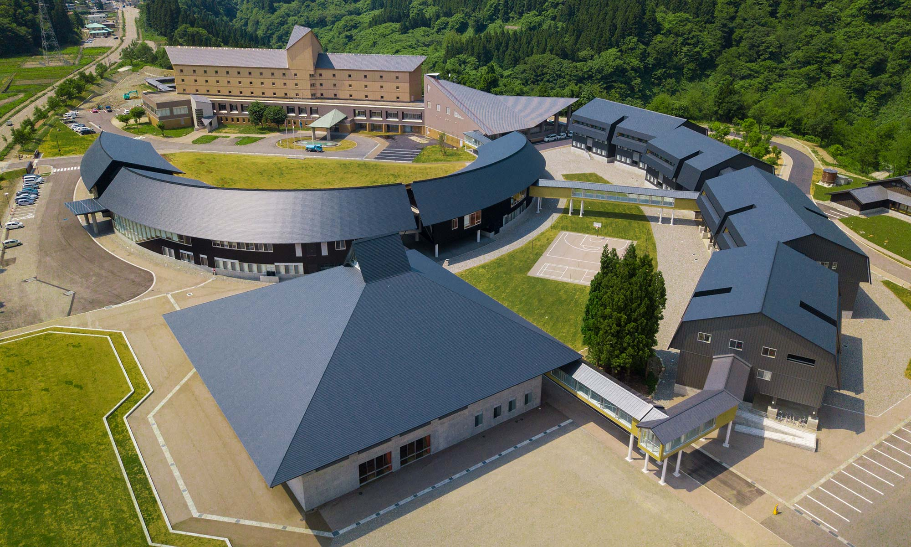

Welcome to the Portolio Website of Shuntaro
Name: Shuntaro Sato 佐藤 俊太朗
Age: 16
I like play computer game. I am into play mincraft. I do not like spelunking, I like craft something big things such as castle or house and so on.
Name: Shuntaro Sato 佐藤 俊太朗
Age: 16
I like play computer game. I am into play mincraft. I do not like spelunking, I like craft something big things such as castle or house and so on.
![[Robocon project]](Microsoft Edge 2019_12_18 20_20_01 (2).png)
I was active from May to August.
This is a movie about bad design which you found. I talked about problem of can.
My STEM Project in computer Skills IIA was to make a program that calculates the conversion units.